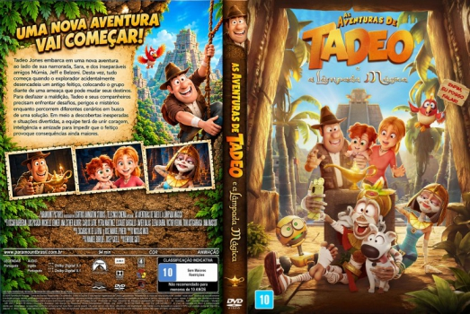

Outro Título:Tadeo Jones y La Lámpara Maravillosa
País:Spain, 94 minutos
Idiomas falados:Inglês, Português
Gênero(s):Animação, Comédia, Família
Diretor(s):Enrique Gato
Escritor(es):Josep Gatell, Manuel Burque
Codec:MPEG-2 (DVD)
Número: 5974
Certificado:10
Sinopse:
Tadeo Jones embarca em uma nova aventura ao lado de sua namorada, Sara, e dos inseparáveis amigos Múmia, Jeff e Belzoni. Desta vez, tudo começa quando o explorador acidentalmente desencadeia um antigo feitiço, colocando o grupo diante de uma ameaça que pode mudar seus destinos. Para desfazer a maldição, Tadeo e seus companheiros precisam enfrentar desafios, perigos e mistérios enquanto percorrem diferentes cenários em busca de uma solução. Em meio a descobertas inesperadas e situações divertidas, a equipe terá de unir coragem, inteligência e amizade para impedir que o feitiço provoque consequências ainda maiores.
Elenco:
Tipo de mídia: DVD5,
Legendas: Português, Sem Legendas
Alugado: Não
Tela: Anamorphic Widescreen